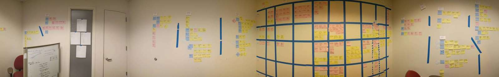

Organizing 150 links into categories
Project
As part of the modernization effort, Walgreens wanted to include the most important links from the very expansive intranet. Ultimately they asked us to include ~150 links in our new app meant to help the managers run their stores.
- My role: UX designer
- Team: UX designer, researcher
Objective
- Organize 150 links in a way that would be easy for managers to find what they need
Work
150 links are overwhelming for a single person to organize and I was unfamiliar with almost all of the links. Another UX designer, a researcher, and I decided to lock ourselves in an empty storage closet for a week. We divided and conquered. Each of us took about 50 links, visited them, and contributed information to the shared spreadsheet. This collaboration was done in a day. We spent the next couple days organizing and reorganizing these links onto the walls of the storage closet. We ended up with about 7 top level categories.

Our guesses were good, but we wanted to make sure they resonated with the stores.
Our researcher sent out a series of card sorts. Each test sorted around 30 links. Some of the tests had category names already assigned, while some were completely open.
End result
- 46% of links remained where we categorized them
- 18% of links were categorized inconclusively, so we made our best guess based on the comments from employees
- 36% of links were originally categorized wrong, so we moved them based on employee recommendations
For a bunch of people completely unfamiliar with the links, the store employees agreed with us more than I expected.
Once the categories were finalized, we presented the results to our business partners. After using data to answer any questions and assuage any fears, business agreed with our proposal.
To assist our dev team, we then used the sticky notes room to organize every link into a release calendar.
Reflection
Ultimately, this app was discontinued once the intranet website was updated to be responsive, but it's hard not to feel satisfied with the amount of work that got done. The photos themselves speak of to the absurdity of this project, but by dividing responsibilities and really focusing, we got the work done in a timely manner.